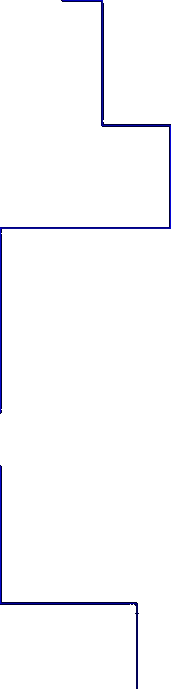
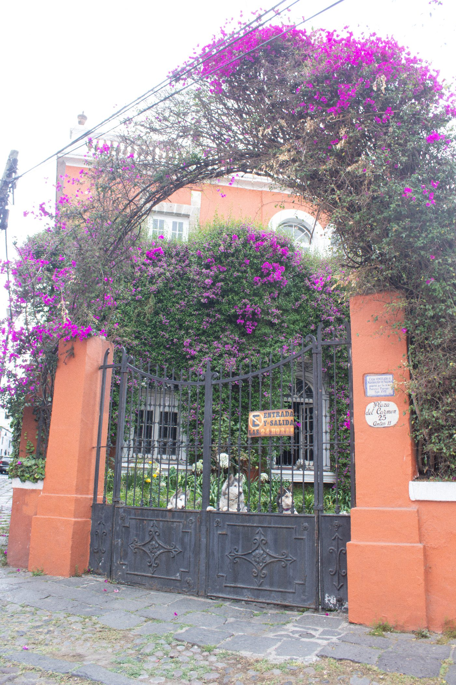
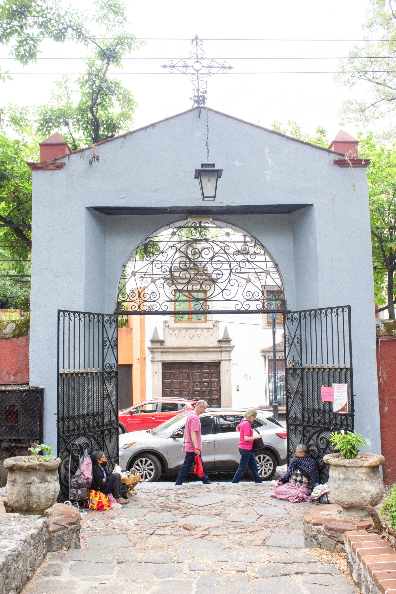
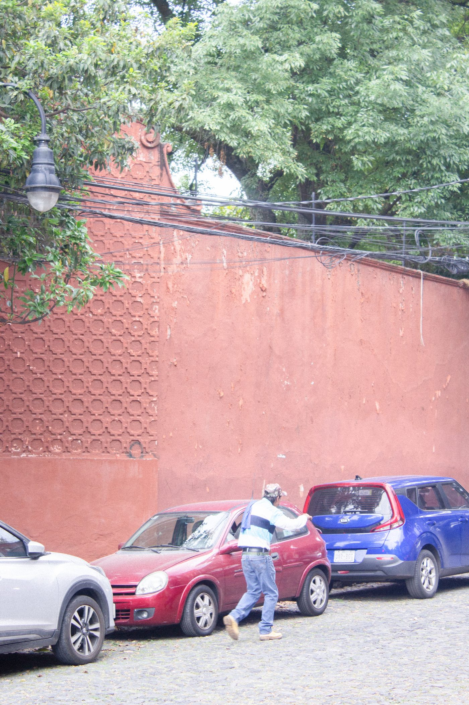
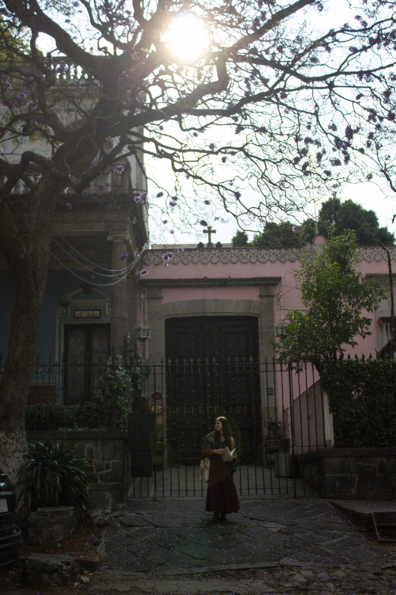

Iniciar las salidas de campo en San Ángel fue un reto metodológico.

Sin embargo, caminar el lugar muchas veces nos permitió reconocer esquinas y rostros habituales.

Entre más explorábamos, más capas de la historia y el espacio de San Ángel se iban revelando ante nosotras.

Las últimas visitas fueron las más enriquecedoras. Conectamos con la memoria viva del lugar a través de datos históricos, leyendas de casas embrujadas y pláticas con artistas del Bazar del Sábado.
Conversar con creadores que han trabajado para instituciones como Bellas Artes fue increíble para nuestro gusto por el arte.
Aunque fue un proceso complejo, decidimos hablar desde una perspectiva personal y honesta.
Este proyecto documenta y rescata aquello que capturó nuestra atención a través del diseño y la comunicación visual.

Agradezco los buenos y malos momentos que vale y mafer pasaron en este proyecto, las risas y las jaladas de pelo.tqm